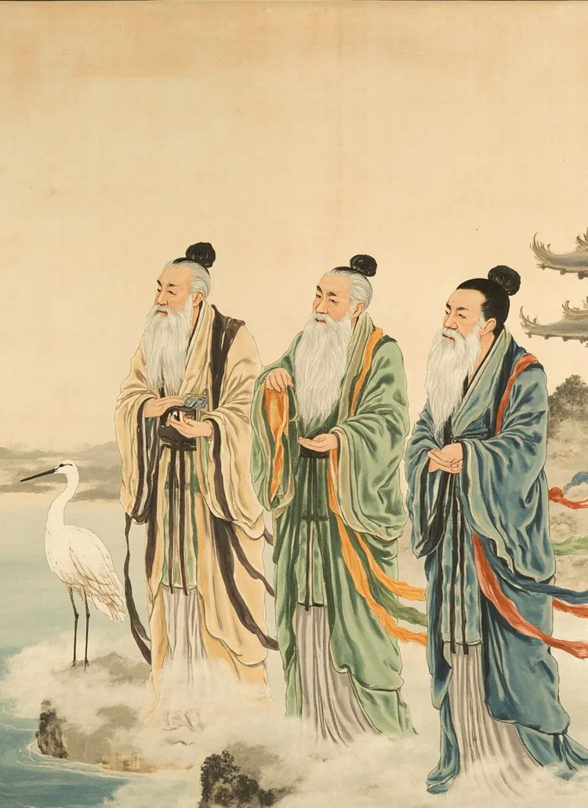
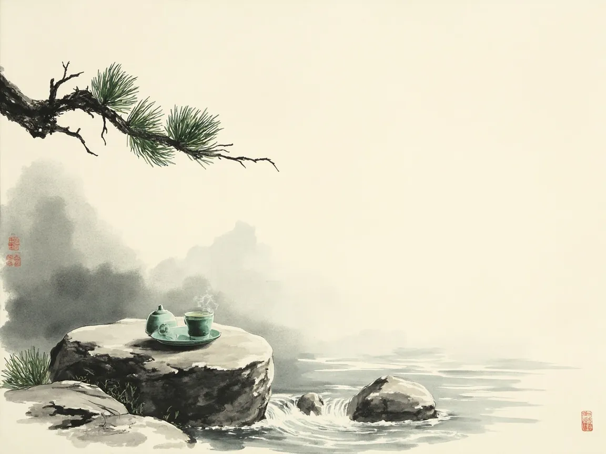
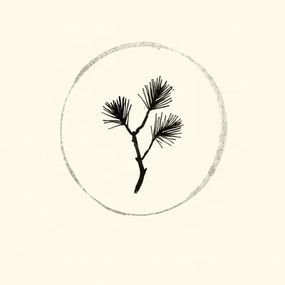
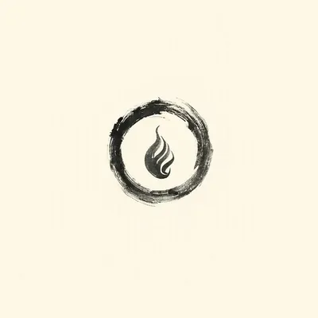
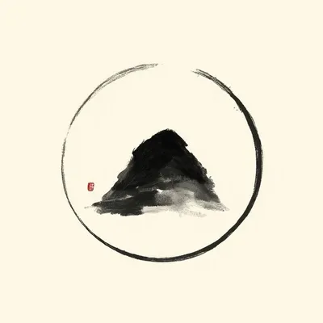
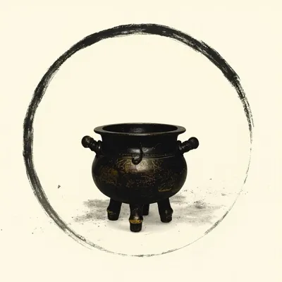
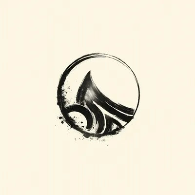
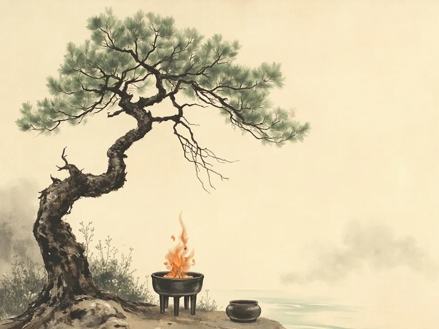
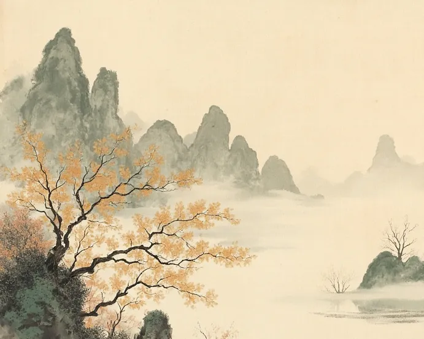
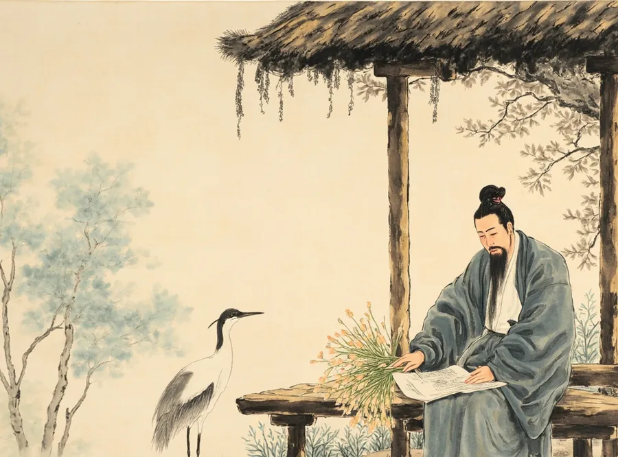

Hexagram of the Day
卦Free I Ching readings: ask a question, cast six lines by hand, and read your hexagram from the classic Book of Changes. For culture and reflection.
上善若水。水善利萬物而不爭。
“The highest good is like water. Water benefits the ten thousand things and does not contend.”
Tao Te Ching (Daodejing), ch. 8
问卦 · Consult
Choose what you want to explore and, if you like, write your question.
Please write your question first.
Build your hexagram one line at a time, from the bottom up.
The time method follows the traditional Plum Blossom rule: (year branch + lunar month + lunar day) gives the upper trigram; adding the hour branch gives the lower trigram and the moving line.
Yin & yang · moving line · trigram · Plum Blossom — hover or tap a term for a plain explanation.
Texts follow the classic I Ching (Book of Changes, Zhouyi) in King Wen order. Judgment and Image: English translation by James Legge, The Yî King (1882, public domain), via sacred-texts.com; Chinese original via Wikisource 周易.
Did this give you a moment of reflection? AskDao is free; a voluntary tip helps keep it that way.
☕ Support AskDao on Ko-fiYou cast by hand; the page only records and draws the lines. A reading is generated only when you request it, as text for culture and entertainment, not prediction.

源 · Origins
For thousands of years, Chinese thinkers watched the sky, the rivers and the seasons, and sought the Dao (道) — the Way beneath all change. From the trigrams attributed to the legendary Fu Xi, to the Book of Changes of the Zhou dynasty, to Laozi's Daodejing, this tradition shaped Chinese philosophy, medicine, art and daily life. In later Taoist imagery, the Three Pure Ones (三清, Sanqing) personify the origin of the cosmos.
AskDao invites you to explore that heritage: cast a hexagram, meet the Five Elements, and reflect.

茶 · A cup of tea
AskDao is free. If it brought you a moment of reflection, you may leave a voluntary tip. Tips are gifts — nothing is sold or promised in return.
☕ Support AskDao on Ko-fi今日 · Today
The daily hexagram is chosen by date, the same for everyone, as a theme for reflection. Solar term dates are calculated from the sun's position (Beijing time). Almanac data: lunar-javascript (6tail, MIT). Traditional folk reference, for entertainment only.
五行 · Wuxing
Wuxing describes five phases of change that generate and restrain one another — a lens used in Chinese philosophy, medicine, cuisine and the calendar.

木Growth and spring. Upward, flexible energy; associated with the east and the color green.

火Summer and expansion. Warmth, brightness, passion; the south and the color red.

土Center and balance. Nourishment and stability; the turning points between seasons, yellow.

金Autumn and refinement. Structure, clarity, letting go; the west and the color white.

水Winter and stillness. Wisdom, depth, adaptability; the north and the color black.
Generating cycle (outer arcs): Wood → Fire → Earth → Metal → Water → Wood.
Restraining cycle (inner star): Wood → Earth → Water → Fire → Metal → Wood.
六十四卦 · The 64
In the traditional King Wen order. Select a hexagram to read a short note on its image and meaning.
八卦 · Bagua
Each hexagram is built from two of eight trigrams, three-line figures of solid (yang) and broken (yin) lines. The diagram shows the Later Heaven (后天) arrangement traditionally attributed to King Wen, with south at the top as on classical Chinese maps: Li (Fire) in the south, Kan (Water) in the north, Zhen (Thunder) in the east and Dui (Lake) in the west.
At the centre sits the taiji (太极) symbol: yin and yang each hold a seed of the other, and neither exists alone. The Xici commentary to the I Ching says: 易有太極，是生兩儀 — “In change there is the Great Ultimate, which gives rise to the two modes.”
文章 · Reading

Wood feeds fire, fire leaves earth, earth yields metal. How an ancient model of change shaped Chinese medicine, cooking and the calendar.

Farmers divided the sun's yearly path into 24 terms, each about fifteen days. UNESCO inscribed them as intangible cultural heritage in 2016.

From Zhou-dynasty divination text to Confucian classic: how sixty-four figures of six lines became a book about change itself.